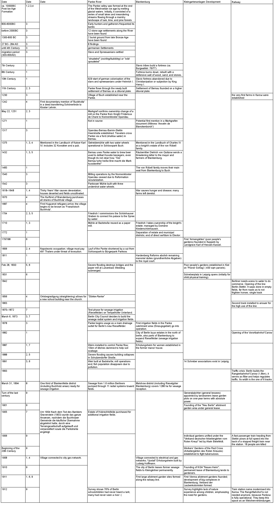

Erosion led to Entropy
In our research, the Panke River serves as a primary example of a territory in constant transformation. Shaped first by glacial melt, the landscape remains in motion and the river would slowly erode its own path, were it not for our anthropological impact. We observed that human attempts to freeze these meanders in time, in the name of efficiency, often backfire, because the landscape resists static control. This led us to a shift in perspective: we no longer see the territory as a fixed state, but as an entropic mixture. To map this entropy, we have to understand time as an active physical force, one that produces both change and compression.

Space Time State


To make this process legible, we first organized the terrain through a 3-dimensional matrix of SPACE, TIME and STATE.
State + Space = Map
resulting in single Layer
Space + Time = Compression
resulting in Palimpseste

@Eliott: Maybe not only Palimpseste, but also the Geological Cut, which Exchanges the x with z, but somehow z also = t in a Geological cut? But hard to read for amateurs
Time + State = Sequence
resulting in TIMELINE


Overlay Overload
But when all three axes were combined, the center of the matrix collapsed into a void. The result was what we came to call an "overlay overload," in which too many layers rendered the drawing unreadable.

Space Time Transect
To address this problem, we developed the space-time transect. This instrument rests on two conceptual operations. First, we flatten spatial depth: the vertical space of a traditional map is compressed until geography becomes a single horizontal line of distance, x. Then we replace the vertical axis with time, t. In this way, we give up spatial depth in order to gain temporal depth. The result is a map that allows historical events and material conditions to be grasped with an intuitive understanding of what we are already used to from reading space-dimensional maps. We imagine Geological strata, ownership patterns, and hydrological traces along a timeline can then be understood and made accessible.

References
accompanying literature:


References:
to be continued